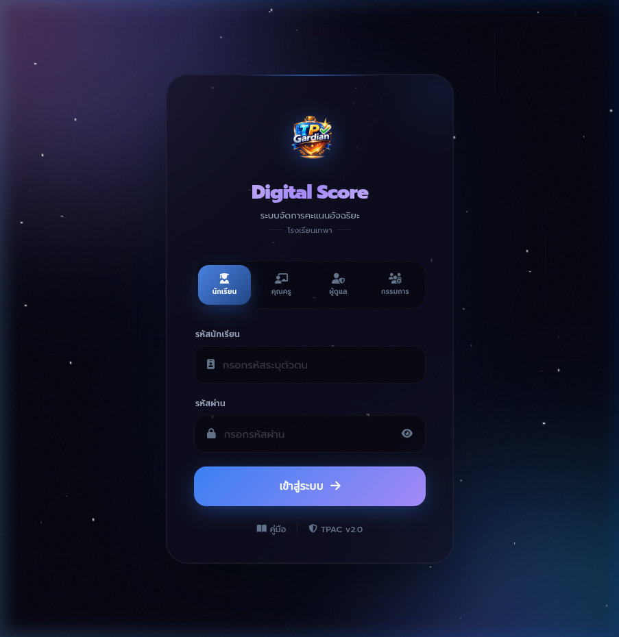
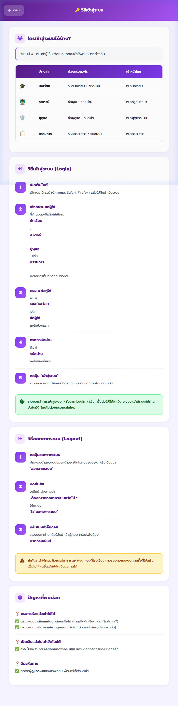
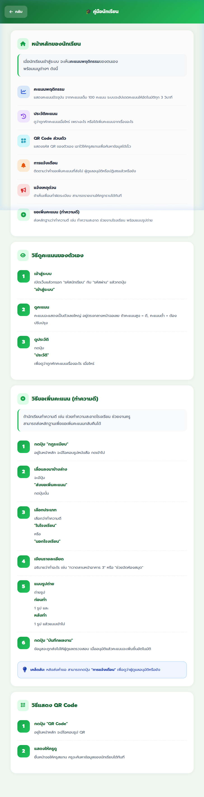
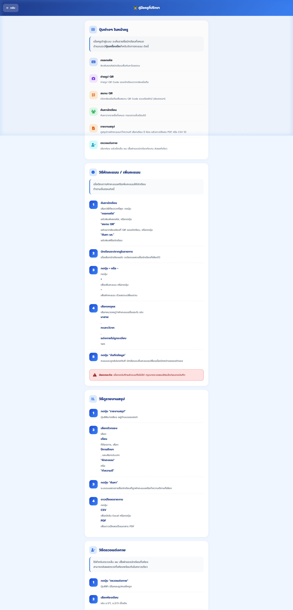
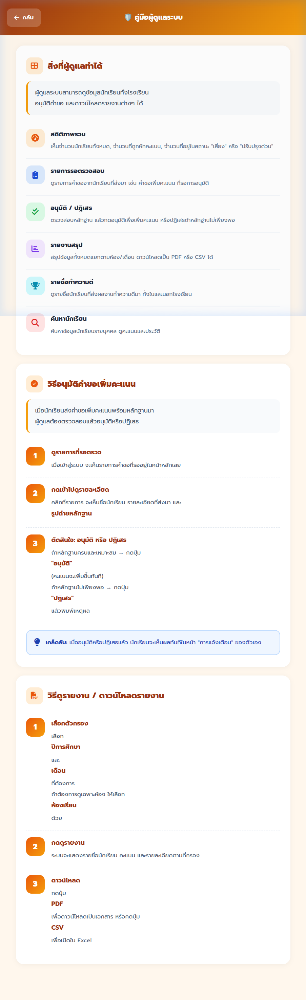
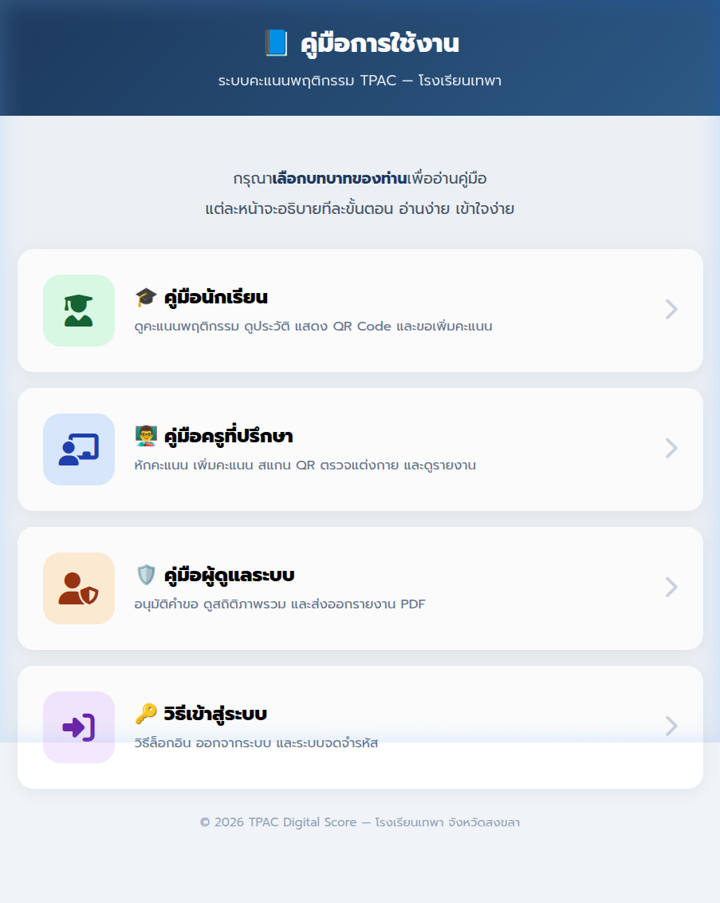

📘 รายงานคู่มือการใช้งาน
TPAC Digital Score
ระบบจัดการคะแนนพฤติกรรมนักเรียน
คู่มือการใช้งานระบบสำหรับนักเรียน ครูที่ปรึกษา และผู้ดูแลระบบ
โรงเรียนเทพา อำเภอเทพา
จังหวัดสงขลา
จัดทำโดย: นางสาวสโรชา เมืองมุสิก & ด.ช.เทิดศักดิ์ สุวรรณมาลี
สถานศึกษา: โรงเรียนเทพา อำเภอเทพา จังหวัดสงขลา
เวอร์ชัน: TPAC v2.0
ปีการศึกษา 2569
📑 สารบัญ
บทที่ 1 — ภาพรวมของระบบ
หน้า 3
บทที่ 2 — วิธีเข้าสู่ระบบ / ออกจากระบบ
หน้า 4
บทที่ 3 — คู่มือสำหรับนักเรียน
หน้า 6
บทที่ 4 — คู่มือสำหรับครูที่ปรึกษา
หน้า 8
บทที่ 5 — คู่มือสำหรับผู้ดูแลระบบ
หน้า 10
บทที่ 6 — ข้อมูลทางเทคนิค
หน้า 12
TPAC Digital Score คือระบบจัดการคะแนนพฤติกรรมนักเรียนแบบดิจิทัล สำหรับโรงเรียนเทพา
ใช้แทนระบบกระดาษแบบเดิม เพื่อให้การติดตามพฤติกรรมนักเรียนเป็นไปอย่างรวดเร็ว โปร่งใส และตรวจสอบได้
🎯 ความสามารถหลักของระบบ
รองรับ 4 บทบาท
นักเรียน, ครูที่ปรึกษา, ผู้ดูแลระบบ, คณะกรรมการ
อัปเดตคะแนนอัตโนมัติ
คะแนนอัปเดตทุก 3 วินาที แจ้งเตือนทันทีเมื่อมีการเปลี่ยนแปลง
สแกน QR Code
ค้นหานักเรียนได้เร็วด้วยการสแกน QR Code
ส่งออกรายงาน
ส่งออกรายงานเป็น PDF หรือ CSV ได้ทันที
ระบบตรวจแต่งกาย
ตรวจเล็บ ผม เสื้อผ้าของนักเรียนทั้งห้อง ส่งผลพร้อมกัน
ระบบขอเพิ่มคะแนน
นักเรียนส่งหลักฐานทำความดีเพื่อขอคะแนนคืน

รูปที่ 1.1 — หน้าเข้าสู่ระบบ TPAC Digital Score
👥 ประเภทผู้ใช้งาน
|
ประเภท |
ข้อมูลที่ต้องกรอก |
เข้าหน้าไหน |
| 🎓 |
นักเรียน |
รหัสนักเรียน + รหัสผ่าน |
หน้านักเรียน |
| 👨🏫 |
อาจารย์ |
ชื่อผู้ใช้ + รหัสผ่าน |
หน้าครูที่ปรึกษา |
| 🛡️ |
ผู้ดูแล |
ชื่อผู้ดูแล + รหัสผ่าน |
หน้าผู้ดูแลระบบ |
| 📋 |
กรรมการ |
รหัสกรรมการ + รหัสผ่าน |
หน้ากรรมการ |
🔑 ขั้นตอนการเข้าสู่ระบบ (Login)
1
เปิดเว็บไซต์
เปิดเบราว์เซอร์ (Chrome, Safari, Firefox) แล้วไปที่หน้าเว็บระบบ
2
เลือกประเภทผู้ใช้
กดแท็บที่ตรงกับบทบาทของท่าน: นักเรียน, คุณครู, ผู้ดูแล, หรือกรรมการ
3
กรอกรหัสผู้ใช้
พิมพ์รหัสนักเรียน หรือ ชื่อผู้ใช้ ลงในช่องแรก
4
กรอกรหัสผ่าน
พิมพ์รหัสผ่านลงในช่องที่สอง
5
กดปุ่ม "เข้าสู่ระบบ"
ระบบจะพาท่านไปยังหน้าที่ตรงกับบทบาทโดยอัตโนมัติ
ระบบจดจำการเข้าสู่ระบบ: หลังจาก Login สำเร็จ ครั้งต่อไปที่เปิดเว็บ ระบบจะเข้าสู่ระบบให้อัตโนมัติ
โดยไม่ต้องกรอกรหัสใหม่
🚪 ขั้นตอนการออกจากระบบ (Logout)
1
กดปุ่มออกจากระบบ
อยู่ด้านขวาบนของหน้าจอ เป็นไอคอนรูปประตู
2
กดยืนยัน
จะมีหน้าต่างถาม "ต้องการออกจากระบบหรือไม่?" กด "ใช่ ออกจากระบบ"
3
กลับไปหน้าล็อกอิน
ระบบจะพาท่านกลับไปหน้าเข้าสู่ระบบ ครั้งต่อไปต้องกรอกรหัสใหม่
สำคัญ: ถ้าใช้คอมพิวเตอร์สาธารณะ ควรออกจากระบบทุกครั้งที่ใช้เสร็จ

รูปที่ 2.1 — หน้าคู่มือวิธีเข้าสู่ระบบ
เมื่อนักเรียนเข้าสู่ระบบ จะเห็นคะแนนพฤติกรรมของตนเอง
พร้อมเมนูต่างๆ
📋 เมนูหลัก
📊 คะแนนพฤติกรรม
แสดงคะแนนปัจจุบัน จากคะแนนเต็ม 100 อัปเดตทุก 3 วินาที
📖 ประวัติคะแนน
ดูว่าถูกหักคะแนนเมื่อไหร่ เพราะอะไร หรือได้เพิ่มคะแนนจากเรื่องอะไร
📷 QR Code ส่วนตัว
แสดง QR Code ของตัวเอง ให้ครูสแกนเพื่อค้นหาข้อมูล
🔔 การแจ้งเตือน
ติดตามสถานะคำขอเพิ่มคะแนน อนุมัติหรือปฏิเสธแล้วหรือยัง
📢 แจ้งเหตุด่วน
รายงานพฤติกรรมไม่เหมาะสมที่พบเห็นให้ครูทราบทันที
✅ ขอเพิ่มคะแนน (ทำความดี)
ส่งหลักฐานการทำความดี พร้อมแนบรูปถ่าย
📝 วิธีขอเพิ่มคะแนน (ทำความดี)
1
กดปุ่ม "กฎระเบียบ"
อยู่ในหน้าหลัก จะมีไอคอนรูปหนังสือ
2
เลื่อนลงมาข้างล่าง
จะมีปุ่ม "ส่งขอเพิ่มคะแนน" กดปุ่มนั้น
3
เลือกประเภท
เลือกว่าทำความดี "ในโรงเรียน" หรือ "นอกโรงเรียน"
4
เขียนรายละเอียด
อธิบายว่าทำอะไร เช่น "กวาดลานหน้าอาคาร 3"
5
แนบรูปถ่าย
ถ่ายรูป ก่อนทำ 1 รูป และ หลังทำ 1 รูป แล้วแนบเข้าไป
6
กดปุ่ม "บันทึกผลงาน"
ข้อมูลจะถูกส่งให้ผู้ดูแลตรวจสอบ เมื่ออนุมัติแล้วคะแนนจะเพิ่มขึ้น
เคล็ดลับ: หลังส่งคำขอ สามารถกดปุ่ม "การแจ้งเตือน" เพื่อดูว่าผู้ดูแลอนุมัติหรือยัง

รูปที่ 3.1 — หน้าคู่มือการใช้งานสำหรับนักเรียน
เมื่อครูเข้าสู่ระบบ จะเห็นรายชื่อนักเรียนทั้งหมด
ด้านบนจะมีปุ่มเครื่องมือสำหรับจัดการคะแนน
🔧 ปุ่มเครื่องมือ
⌨️ กรอกรหัส
พิมพ์เลขรหัสนักเรียนเพื่อค้นหาโดยตรง
📸 ถ่ายรูป QR
ถ่ายรูป QR Code ของนักเรียนจากกล้อง
📱 สแกน QR
เปิดกล้องสแกน QR Code แบบเรียลไทม์
🔍 ค้นหานักเรียน
ค้นหาจากรายชื่อทั้งหมด กรองตามชั้นเรียน
📋 รายงานสรุป
ดูสรุปการหัก/เพิ่มคะแนน ดาวน์โหลด PDF/CSV
👔 ตรวจแต่งกาย
เลือกห้อง เช็คเล็บ/ผม/เสื้อผ้า ส่งผลทีเดียว
➖ วิธีหักคะแนน / เพิ่มคะแนนนักเรียน
1
ค้นหานักเรียน
กรอกรหัส / สแกน QR / ค้นหาจากชื่อ
2
นักเรียนจะปรากฏในรายการ
เมื่อเลือกนักเรียนแล้ว จะมีแถบแสดงชื่อ
3
กดปุ่ม + หรือ -
กด + เพื่อเพิ่มคะแนน หรือ - เพื่อหักคะแนน
4
เลือกเหตุผล
เลือกหมวดหมู่ เช่น มาสาย, ทะเลาะวิวาท, แต่งกายไม่ถูกระเบียบ
5
กดปุ่ม "บันทึกข้อมูล"
คะแนนจะถูกอัปเดตทันที นักเรียนจะเห็นคะแนนเปลี่ยน
ข้อควรระวัง: เมื่อกดบันทึกแล้วจะแก้ไขไม่ได้ กรุณาตรวจสอบให้แน่ใจก่อนกดบันทึก
👔 วิธีตรวจแต่งกาย
1
กดปุ่ม "ตรวจแต่งกาย"
ปุ่มสีฟ้า มีไอคอนรูปคนเช็คถูก
2
เลือกห้องเรียน + เดือน + รอบ
เลือกห้อง, เดือน, ปี, และรอบที่ตรวจ (ครั้งที่ 1 หรือ 2)
3
กด "โหลดรายชื่อ"
รายชื่อนักเรียนทั้งห้องจะปรากฏขึ้น
4
ติ๊กช่องที่ไม่ผ่าน
เล็บยาว → ติ๊กช่องเล็บ, ผมยาว → ติ๊กช่องผม, ชุดไม่ถูกระเบียบ → ติ๊กช่องเสื้อผ้า
5
กด "ส่งผลตรวจ"
คะแนนจะถูกหักจากนักเรียนที่ไม่ผ่านอัตโนมัติ

รูปที่ 4.1 — หน้าคู่มือการใช้งานสำหรับครูที่ปรึกษา
ผู้ดูแลระบบสามารถดูข้อมูลนักเรียนทั้งโรงเรียน อนุมัติคำขอ
และดาวน์โหลดรายงานต่างๆ
⚙️ ฟีเจอร์หลัก
📊 สถิติภาพรวม
จำนวนนักเรียนทั้งหมด, จำนวนที่ถูกหักคะแนน, สถานะเสี่ยง/ปรับปรุงด่วน
📋 รายการรอตรวจสอบ
ดูรายการคำขอจากนักเรียนที่ส่งมา รอการอนุมัติ
✅ อนุมัติ / ปฏิเสธ
ตรวจสอบหลักฐาน กดอนุมัติเพื่อเพิ่มคะแนน หรือปฏิเสธ
📈 รายงานสรุป
สรุปข้อมูลแยกตามห้อง/เดือน ดาวน์โหลดเป็น PDF/CSV
🏆 รายชื่อทำความดี
ดูรายชื่อนักเรียนที่ส่งผลงานทำความดี ทั้งในและนอกโรงเรียน
✅ วิธีอนุมัติคำขอเพิ่มคะแนน
1
ดูรายการที่รอตรวจ
เมื่อเข้าสู่ระบบ จะเห็นรายการคำขอที่รออยู่ในหน้าหลัก
2
กดเข้าไปดูรายละเอียด
คลิกที่รายการ จะเห็นชื่อนักเรียน รายละเอียด และรูปถ่ายหลักฐาน
3
ตัดสินใจ: อนุมัติ หรือ ปฏิเสธ
หลักฐานครบ → กด "อนุมัติ" (คะแนนเพิ่มทันที) | ไม่เพียงพอ → กด "ปฏิเสธ" พร้อมเหตุผล
เคล็ดลับ: เมื่ออนุมัติหรือปฏิเสธแล้ว นักเรียนจะเห็นผลทันทีในหน้า "การแจ้งเตือน"
📥 วิธีดาวน์โหลดรายงาน
1
เลือกตัวกรอง
เลือกปีการศึกษา, เดือน, ห้องเรียนที่ต้องการ
2
กดดูรายงาน
ระบบจะแสดงรายชื่อนักเรียน คะแนน และรายละเอียด
3
ดาวน์โหลด
กดปุ่ม PDF เพื่อดาวน์โหลดเป็นเอกสาร หรือ CSV เพื่อเปิดใน Excel

รูปที่ 5.1 — หน้าคู่มือการใช้งานสำหรับผู้ดูแลระบบ
📦 ไฟล์สำคัญในระบบ
| ไฟล์ |
หน้าที่ |
server.js |
เซิร์ฟเวอร์หลักของระบบ |
index.html |
หน้าเข้าสู่ระบบ (Login) |
home.html |
หน้าแดชบอร์ดนักเรียน |
th.html |
หน้าจัดการคะแนน (ครูที่ปรึกษา) |
teacher-dashboard.html |
หน้าแดชบอร์ดผู้ดูแลระบบ |
cd.html |
หน้าคณะกรรมการ |
user2.1.json |
ข้อมูลนักเรียนทั้งหมด (ชื่อ, รหัส, คะแนน, สถานะ) |
th.json |
ข้อมูลบัญชีครู |
TPAC.json |
ข้อมูลบัญชีผู้ดูแลระบบ |
cd.json |
ข้อมูลบัญชีคณะกรรมการ |
log.json |
บันทึกการหัก/เพิ่มคะแนนทั้งหมด |
toadmin.json |
รายการคำขอรอตรวจสอบ |
cookie.json |
ข้อมูล Session สำหรับจดจำการเข้าสู่ระบบ |
🚀 วิธีเริ่มต้นใช้งาน
# 1. เปิด Terminal ที่โฟลเดอร์โปรเจกต์
cd d:\TP
# 2. รันเซิร์ฟเวอร์
node server.js
# 3. เปิดเบราว์เซอร์ไปที่
http://localhost:3000/index.html

รูปที่ 6.1 — หน้าเลือกคู่มือตามบทบาทผู้ใช้